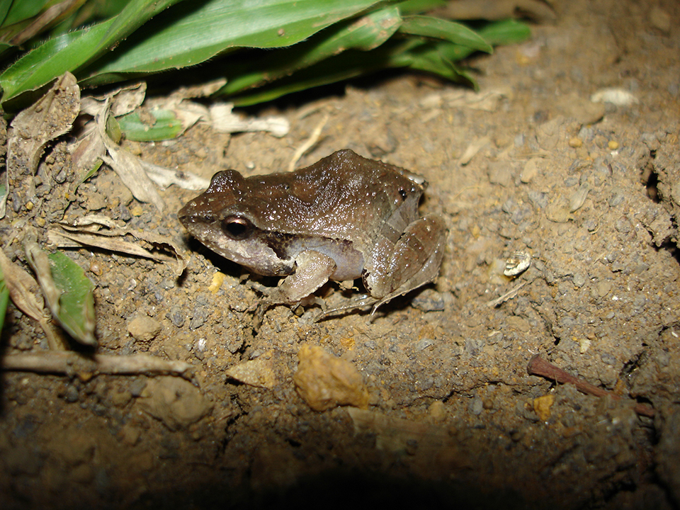
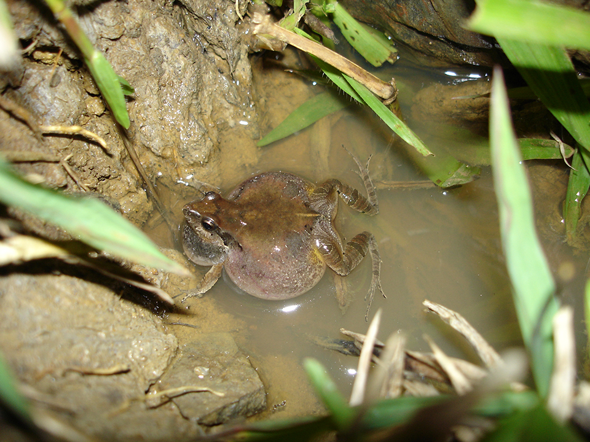

Animal de pequeno porte, sua coloração é castanha ou cinza com manchas ou linhas escuras no dorso, um ventre branco, e com um larga faixa lateral escura. Uma espécie comum, terrestre, que habita áreas abertas. Ocorre ao longo do Brasil, além da Bolívia, Paraguai, Argentina e Uruguai.
Está geralmente associado a ambientes alagados e poças onde os machos podem ser vistos vocalizando enquanto flutuam na água. Sua vocalização lembra um latido de cachorro, motivo de seu nome popular. Suas desovas podem ser encontradas agrupadas em vários ninhos de espuma, aderida à vegetação da margem.
 